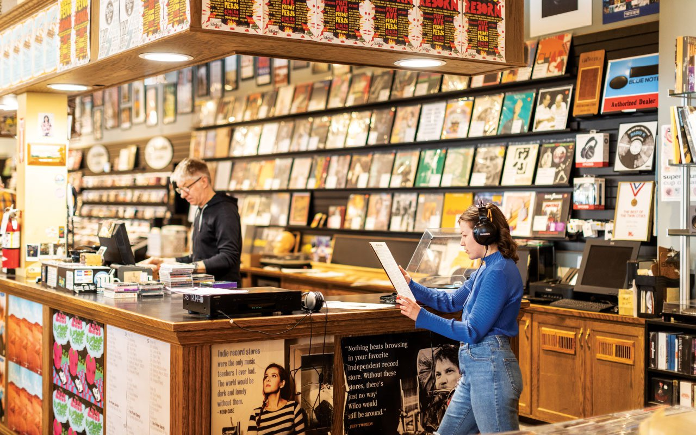

Gifts
FAQs
Contact
Home
Gifts
FAQs
Contact
Home
Who Are We?
The Electric Fetus has been a staple business in the Twin Cities for over 50 years and has been the meca for vinyl and music lovers since the doors opened. Musicians from not only the Twin Cities, like Prince, have made apperences in the shop, but from all over the world have raved about the Fetus for decades. But at the heart of it all, the community around the shop is what has kept this iconic landmark open for as long as it has.
Quality in Tradition
The Electric Fetus is a small business at its heart. In being a small business that has been a regional icon for this long, there is a certain image that we have gained. We put in effort everyday to keep that image for customers we have had for decades as well as present that image to those new to the store.